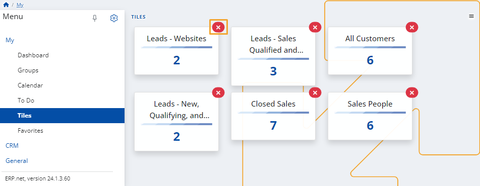
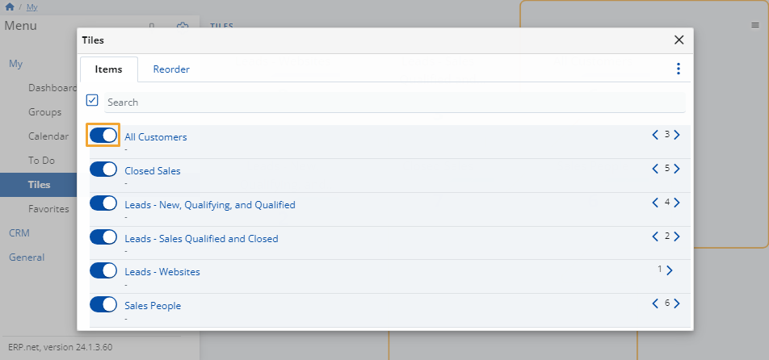

Tiles
This module features useful statistics on some of your business activities.
It allows for additional customization to better fit your business needs.

Tile actions
Click the button the top-right corner of the page in order to Edit, Reload or Customize the view of this page.

Edit
This action allows you to remove a tile by clicking on the red cross button at its top-right corner.
You'll be asked to confirm the action.

Reload
This action refreshes the information on the tiles so that the most up-to-date data is displayed.
Customize view
This action allows you to reveal or hide tiles from the page, as well as change their order.
It opens a separate window with two tabs:
Items
Click on the sliders next to an item to add or limit access to the respective tile.

Reorder
Change the order in which tiles appear by dragging them up and down.

Note
The screenshots taken for this article are from v24 of the platform.